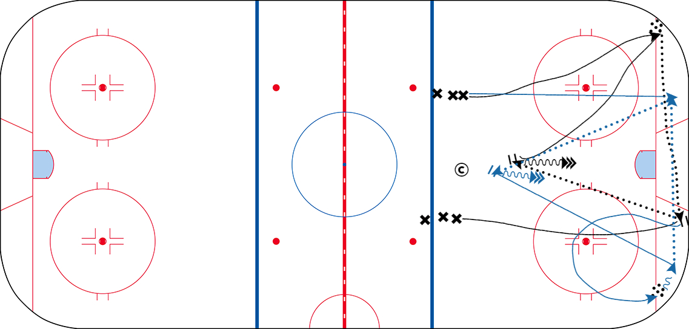
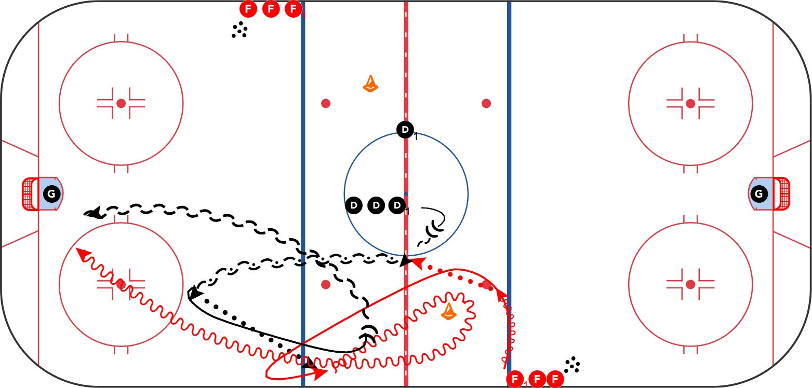
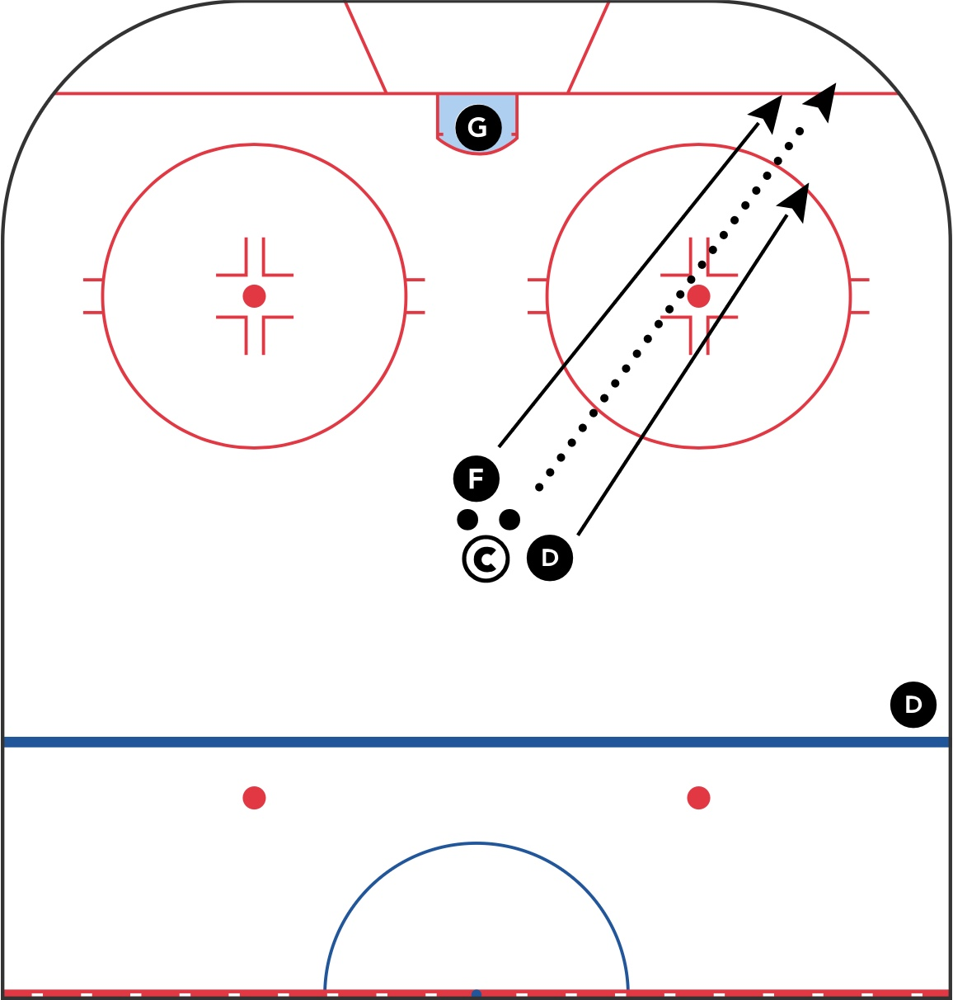
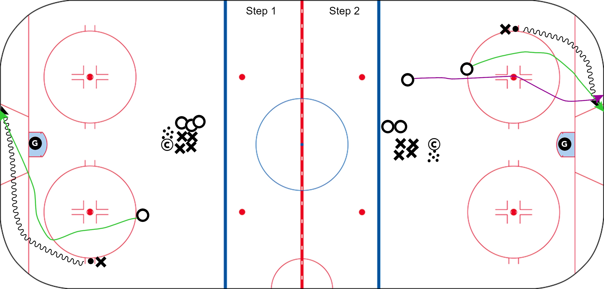

Simple, Fast, Heavy - five connected players taking away time, space and the middle
Defensive Philosophy: Simple, Fast, Heavy
My team is gritty and hard-working, so our defence is where that identity shows up most. We do not need to out-skill opponents to keep pucks out of our net; we need five players who know their job, get there first and finish the play. Defence is not a phase we wait through - it is how we get the puck back so we can play our Simple, Fast, Heavy offence. This plan covers four connected concepts: Forechecking, Playing the Rush, Tracking and Defensive Zone Coverage, plus angling with the stick on the puck in the neutral and defensive zones.
Our Defensive Promise
Simple: clear jobs (F1, F2, F3, D1, D2) and short calls, so nobody hesitates. Fast: we close time and space quickly, track hard and transition the moment we win the puck. Heavy: we stop on pucks, finish checks legally, win the net front and block shots. We defend inside-out and protect the middle before anything else.
Inside-out. Above the puck. Stick on puck, body on body. Five connected.
Four Non-Negotiables
No fly-bys: we stop on pucks, on checks and at the net.
No forward below the puck when F3 should be high, and no D pinch without F3 covering.
No open middle: backcheckers track through the inside lane and the house is protected first.
No uncalled attackers: every opponent has a name (MINE) before our blue line.
1. Inside-Out
Our body is always between the opponent and the net. We give up the outside, never the middle.
2. Stick First, Body Through
The stick takes the puck away from the body; then we finish through the hands and pin with the legs.
3. Above the Puck
Forwards stay on the defensive side of the puck, so our D can hold an early gap and play forward.
4. Five Connected
Pressure, support and cover around the puck in every zone. Nobody defends alone.
5. Jobs, Not Positions
The closest player becomes F1, the next F2, the highest F3. Forwards cover for D automatically.
Defensive Principles of Play
Pressure
Take away time and space. The first player attacks the puck carrier with an angle, stick on puck, and forces a decision before the opponent is ready.
Defensive Support
Take away the next play. The second player removes the closest pass or seals the wall so the pressure produces a turnover, not a chase.
Balance & Cover
Protect the middle and the house. The third player and the D stay inside and above the puck so one mistake never becomes a scoring chance.
Control & Transition
Win it and go. Contain, pin and recover the puck, then move it OUT or counter before the opponent can reorganize.
Principle
Forechecking
Playing the Rush
Tracking
D Zone Coverage
Pressure
F1 angles inside-out, takes away the net and reverse, and finishes on the puck carrier.
D1 closes the gap by the blue line with the stick on the puck and steers the carrier outside the dots.
F1 applies back pressure from the inside lane: stick on puck, stick on hands.
The strong-side D pressures in the corner; F2 closes out the half-wall or the point with the stick in the lane.
Defensive Support
F2 reads F1 and seals the wall or the D-to-D; becomes F1 if F1 is beaten.
D2 takes the middle drive to the net; the backchecker takes the late player.
F2 takes the middle lane and F3 the weak-side late player, so the D can step up.
F1 supports low between the puck and the net, creating a 2-on-1 down low.
Balance & Cover
F3 stays above the puck in the high slot; the weak-side D protects the middle of the blue line.
The D pair stay connected in the middle and inside the dot lane until the tops of the circles.
All three forwards arrive above the puck and inside the dots before the hash marks.
D2 owns the net front, F3 sits in the weak-side high slot and the house is protected first.
Control & Transition
A forced turnover becomes a five-second attack that must produce a shot.
A takeaway is moved OUT to the backchecker or a wall outlet for a counterattack.
The tracker who strips the puck turns and attacks; the others fill lanes the other way.
Win it, call OUT and use the Q8 breakout reads (UP, OVER, REVERSE); glass and out under heavy pressure.
Skills & Tactics for Defensive Team Play
Our system only works if every player owns the individual skills and understands the tactical ideas behind it. Technical skills are taught first in isolation (Drills 1, 3, 5, 7), then applied in the team drills (2, 4, 6, 8) and reinforced through the two angling drills (9, 10). Body checking is taught and practised safely using Hockey Canada's checking progression: positioning and angling, stick checking, body contact, then body checking.
Technical Skills
Backward Skating & C-Cuts
Knees bent, weight balanced over the balls of the feet, short powerful C-cuts so the D can match an attacker's speed without opening the hips early.
Rush - Tracking - D Zone
Pivots & Transitions
Forward-to-backward and backward-to-forward pivots (open-hip and mohawk) at full speed, so we can close the gap and then turn to finish without losing a stride.
Rush - Angling
Gap-Control Footwork
Lateral crossovers and crossunders to stay in the inside dot lane, and the timing to step up when support arrives (SQUEEZE).
Rush - Tracking
Stick Detail
Stick on the ice and in lanes; poke, sweep and lift checks; stick on puck from the inside when tracking; stick on stick at the net front. Legal and disciplined: no hooking or slashing.
All four concepts
Angling
Hockey Canada's first checking skill: a curved, inside-out route that takes away time, space and the middle and steers the carrier to the wall.
Forecheck - Neutral Zone - D Zone
Body Contact & Checking
Stopping on pucks, finishing through the hands and chest, pinning on the wall with the legs and checking safely: never from behind, never to the head.
Forecheck - D Zone
Shot Blocking
Reading the shooter, getting in the lane early, protecting the face and hands, and recovering to a stance after the block.
D Zone
Net-Front Battles & Scanning
Box-out position on the defensive side, tying up the stick, and shoulder checks every few seconds to know where the puck and the dangerous player are.
Tracking - D Zone
Tactical Concepts
Pressure - Support - Cover
First player pressures the puck, second takes away the next pass, third protects the middle. This triangle is the base of every defensive situation.
All four concepts
Gap Management
Tight gap when we have back pressure and the carrier's head is down; looser gap when the attackers have speed, numbers or a clean pass. Gap is earned in the neutral zone.
Rush - Tracking
Inside Position & the House
Defend inside-out: our body between the opponent and the net, and five players protecting the slot area between the posts, the dots and the tops of the circles.
D Zone - Rush
Above the Puck
Forwards stay on the defensive side of the puck. F3 never gets caught below it on the forecheck; backcheckers arrive above the puck before the hash marks.
Forecheck - Tracking
Man vs Zone (Hybrid)
We defend a zone with man responsibilities: zone principles protect the house and the strong side, while net-front and 2-on-1 situations are played player-on-player.
D Zone
Odd-Man Rush Rules
2-on-1: D takes the pass and the goalie takes the shooter. 3-on-2: D1 takes the puck, D2 the net drive, the backchecker the late player.
Rush - Tracking
Forecheck Reads
GO (2-1-2) when the puck is rimmed or the D is turned; SET (1-2-2) when the opponent has time and structure. D pinch only with F3 high.
Forecheck
Defence to Offence
Every defensive play ends with a plan for the puck: OUT using our Q8 breakout reads, or a counterattack inside three seconds after a neutral-zone takeaway.
All four concepts
Plan Across the Four Concepts
1. Forechecking
Default: 2-1-2 (GO). Read: 1-2-2 contain (SET) when the opponent has time.
F1 angles inside-out, takes away the net and reverse, and finishes on the body.
F2 reads F1 and takes away the next pass: the wall or the D-to-D.
F3 stays above the puck in the high slot and is the trigger for a D pinch.
D pinch on wall pucks only with F3 high; the weak-side D protects the middle.
2. Playing the Rush
Rule: gap early, inside dot lane, stick on puck.
D close the gap in the neutral zone and pivot at the red line to match speed.
D1 takes the puck carrier and forces him outside the dots; D2 takes the net drive.
2-on-1: D takes the pass, goalie takes the shooter. 3-on-2: the backchecker takes the late player.
SQUEEZE when the backchecker arrives: the D steps up and the play dies on the wall.
3. Tracking
Rule: above the puck, inside lane, call it.
Sprint the first three strides through the middle, never along the wall.
F1 back pressure on the carrier; F2 the middle; F3 the weak-side late player.
Stick on puck from the inside: legal pressure, no hooks or slashes.
Every attacker is called (MINE) before our blue line, so our D can play an early gap.
4. D Zone Coverage
System: hybrid zone with low support and man responsibilities at the net.
Strong-side D pressures; F1 (usually the centre) supports low between the puck and the net.
Weak-side D owns the net front: net side, stick on stick, eyes on the puck.
F2 takes the strong-side lane; F3 takes the weak-side high slot and the D-to-D close-out.
Protect the house first, rotate on the pass, and get OUT when we win it.
GO2-1-2 pressure forecheck
SET1-2-2 contain forecheck
F3I am high - D may pinch
PINCHD steps down the wall
GAPD close up in the neutral zone
SQUEEZEBackchecker here - D steps up
MINEI have this attacker
STICKStick in the lane / on the puck
HOUSECollapse inside the dots
OUTWe have it - transition now
Automatic Defensive Interchange
F1, F2 and F3 are jobs, not fixed players, and the same is true in our own end. If a D is pulled into the corner or below the goal line, the nearest forward (usually F1) fills the net front until the D recovers. If a D pinches, F3 replaces the high position and the weak-side D slides to the middle. If F1 is beaten on the forecheck, F2 becomes the new F1 and F3 drops into the F2 role. When the backchecker arrives on a rush, the D and the backchecker switch who has the late player with one word - SQUEEZE - rather than both chasing the puck.
Tight Gap
We have back pressure, the carrier's head is down or the pass is bobbled. D step up, stick on puck, and kill the play in the neutral zone.
Controlled Gap
Even numbers and the carrier has speed. D match speed, stay inside the dots, and close to one stick length by our blue line.
Retreat Gap
Odd-man rush or a stretch pass behind us. D stay connected, protect the middle and the net, and wait for the backchecker before stepping up.
Ten-Drill Defensive Team Play Package
Each drill comes from my association's CoachThem drill bank, and the diagrams are the CoachThem drawings. The four concepts are taught as a skill drill followed by a team drill, and the package finishes with angling with the stick on the puck in the neutral zone and the defensive zone.
Drill selection: I chose these ten drills from the association's CoachThem drill bank because each one teaches a job in our Simple, Fast, Heavy system. The setups follow the CoachThem descriptions; the teaching points, progressions and terminology are mine.
1
Forechecking - Skill
F1 to F3 Rotation for the Quick Shot
Objective: Train forwards to change forecheck jobs at full speed: win the puck as F1, move it to F2 below the goal line, then explode back to the F3 position and finish a quick shot.
PressureDefensive SupportControl & Transition

Setup
One end of the ice. Forwards line up in two lines at the blue line, one on each side. Pucks are in both corners and the coach stands in the high slot. One goalie in net. The drill runs continuously from alternating sides.
Detailed Drill Instructions
F1 attacks the corner: On the whistle, the first forward leaves as F1, skates hard to the corner and picks up a puck, the same route as a forechecker arriving on a retrieval.
F2 drives below the goal line: The first forward from the other line leaves at the same time and skates hard below the goal line as F2 on the forecheck. F1 passes the puck to F2 behind the net.
F1 rotates to F3: As soon as the pass is made, F1 explodes back through the middle to the F3 high position. F1 stops in the slot; no circling or gliding into position.
Quick shot from the slot: F2 passes back to F1, who walks in from the high slot and takes a quick shot. The release is fast and on net, so the drill trains the transition from forecheck to offence.
Keep it continuous: F2 circles into the corner for the next puck and becomes the new F1. A new forward comes hard into the zone below the goal line as the next F2, so every player cycles through F1, F2 and F3.
Progression, scoring and rotation: Start at half speed to learn the pattern, then run it at full speed with a 3-second limit from the F2 pass to the shot. Add a passive defender in front of the net to make F1 shoot through traffic. Scoring: 1 point for each shot on net from the slot, 2 for a goal. Run 6-8 minutes so the pace stays high.
3 Key Teaching Points
Rotate quickly from F1 on the forecheck to F3 high: stop in the slot, don't circle.
The quick shot comes off the pass in one motion; get it to the net before a defender can close.
Timing: F2 is already moving below the goal line when F1 makes the pass, so the puck never waits.
2
Forechecking - Team
Half Ice Forecheck 3v2
Objective: Run our forecheck as a three-forward unit against two D: separate the puck from the player, rotate quickly between jobs and turn a turnover into offence.
PressureDefensive SupportBalance & Cover
Setup
Played by line and D pair at both ends. Two forwards start on one side of the blue line and one on the other, with pucks. A coach stands on each side of the centre circle. The D pair start on the blue line. Goalies in both nets.
Detailed Drill Instructions
Start the rotation: On the whistle, one forward from the side with two passes to the coach, then skates behind the coach and enters as the high player (our F3). The other two forwards circle in front of the coach and become F1 and F2.
D skate up and pivot: At the same time, the D on the line skate up to the red line, pivot backwards and get ready to play the puck coming into their zone.
Coach dumps it in: The coach dumps the puck in, either a soft chip to the corner or a hard rim. The D have to read it and retrieve it, just like a game dump-in.
Forecheck with the system: The forwards work our forecheck. F1 angles the retrieving D and separates the puck from the player; F2 takes away the next pass; F3 stays above the puck. I call GO or SET from the bench so they practise both reads.
D try to skate it out: The D try to make a play and skate the puck out of the zone. If the forwards win the puck, they attack the net right away and must get a shot.
Progression, scoring and rotation: Start with soft chips so the forwards win more races, then go to hard rims that let the D get there first and test F2's read. Finish with the D allowed to use a breakout outlet (a coach at the blue line). Scoring: forwards earn 1 point for a turnover and 2 for a goal off a turnover; D earn 1 point for skating the puck out. Rotate lines every 40 seconds.
3 Key Teaching Points
Forecheck to separate the puck from the player: angle, stick on puck, then body.
Rotate fast: race from one spot to the next so F1, F2 and F3 are always filled.
Transition from forecheck to offence the moment the puck is won: attack the net immediately.
3
Playing the Rush - Skill
1 vs 1 Gap Up
Objective: Teach the D to close the gap aggressively and own the neutral-zone ice before the forward can attack with speed.
PressureBalance & Cover

Setup
Full ice, run from both sides. Forwards line up with pucks in the corners of the neutral zone at each blue line; D line up in the centre circle. Pylons are set in the neutral zone on each side. Goalies in both nets.
Detailed Drill Instructions
Pass and post up: On the whistle, F1 passes to D1 and posts up between the red line and the blue line.
D carries backwards: D1 carries the puck skating backwards with the head up, then passes back to F1 just below the blue line.
Forward attacks: F1 receives the pass, goes around the pylon and attacks D1 1 on 1 with speed.
Gap up: D1 must gap up as much as possible. D1 transitions forward to close the space early, matches F1's speed and gets stick on puck before F1 reaches the blue line, staying in the inside dot lane.
Finish the 1 on 1: Play it out to a shot or a takeaway. The goalie challenges the shooter. The next pair goes from the other side.
Progression, scoring and rotation: Start with F1 at 75 percent speed, then full speed, then let F1 choose to delay or cut to the middle. Add a backchecking forward on a delay so the D practise the SQUEEZE call. Scoring: D earn 1 point for closing to stick length by the blue line and 2 for a takeaway; F earn 2 for a goal.
3 Key Teaching Points
The gap is somebody's ice, and it has to be ours.
Be proactive closing the gap. I don't care if you get beat, as long as you close.
Goalies challenge the shooter, so the D can play the puck carrier with confidence.
4
Playing the Rush - Team
Turn and Burn
Objective: Defend a 3 on 2 rush with a connected D pair, then immediately gap up and defend a second rush after a transition.
Full ice. Forwards line up at each blue line; D wait in the middle of the ice. One coach is at centre with pucks and one coach is in the zone. Goalies in both nets.
Detailed Drill Instructions
Forwards turn: On the whistle, the first three forwards from one line skate around the centre coach. The coach spots a puck anywhere for them to pick up.
D hold the line: The two D stay on the blue line until the puck is spotted, then read the rush and play the 3 on 2: D1 takes the puck carrier inside the dots, D2 takes the middle drive to the net.
Play the 3 on 2: The forwards attack 3 on 2. The D stay connected through the middle and force the play outside. Play it out to a shot, a rebound or a clear.
Part 2: second puck: On the next whistle, the low coach skates a puck into the neutral zone. The original three forwards track the coach and strip the puck.
D gap up again: The two D who handled the rush gap up and work toward the puck. The forwards then attack the original D for a second 3 on 2, so the D must transition from retreating to gapping up straight away.
Progression, scoring and rotation: Start with the forwards' puck spotted wide so the D can read it easily, then spot it in the middle. Add a backchecking forward in Part 2 so it becomes a 3 on 2 plus one. Scoring: D earn 1 point for a shot held outside the dots and 2 for a takeaway; forwards earn 2 for a goal. Rotate D after both rushes.
3 Key Teaching Points
Forwards: get the puck off the wall, scan before you retrieve, and drive the middle lane.
Defence: trust your feet. Gap up to keep the forwards honest and protect the blue line.
D stay connected through the middle: D1 takes the puck, D2 takes the net drive.
5
Tracking - Skill
2v0 Continuous Backcheck
Objective: Build relentless backchecking habits: every pair that finishes an attack immediately turns and tracks the next pair with the stick on the ice.
PressureBalance & Cover
Setup
Neutral zone. Nets are set on both blue lines. One team (X) lines up at one blue line and the other team (O) at the other, two lines each. The coach stands at the red line with pucks.
Detailed Drill Instructions
First 2v0: The whistle starts a 2v0. The pair catch a pass from the coach and attack the net quickly.
Stop at the net: The attackers drive to the net and stop there for a rebound. No circling or fly-bys.
Next pair goes: The whistle starts the next 2v0, with the coach passing to the next group from the other side.
First pair backchecks: The pair who just attacked now turn and backcheck the next group. They track on the inside lane with the stick on the ice and try to get to the defensive side of the puck.
Keep it continuous: Each pair attacks, stops at the net and then backchecks, so the drill flows continuously with no breaks.
Progression, scoring and rotation: Start with the backcheckers leaving a full second late so they have to chase. Then make the coach's pass quicker so the backcheckers have less time. Finish with the attackers allowed to drop the puck to a trailer. Scoring: backcheckers earn 1 point for forcing a shot from outside the slot and 2 for a takeaway; attackers earn 2 for a goal.
3 Key Teaching Points
Offence: attack quickly and stop at the net.
Backcheckers: relentless recovery with the stick on the ice.
Track on the inside lane to get to the defensive side of the puck.
6
Tracking - Team
Tracking and Sort Out 3v2 Late Backchecker
Objective: After a small-area battle, three forwards must react to a change of possession, backcheck through the middle and sort out who has who.
Full ice. Low in one zone, three attackers play 3 on 2 against two D from the hash marks down. Three more forwards wait at the top of the zone with a puck, and two defenders wait at the blue line to defend the other end. Goalies in both nets.
Detailed Drill Instructions
Small-area 3 on 2: Players low in the zone play 3 on 2 from the hash marks down until the whistle. It is a battle game, so everyone is working hard when the whistle goes.
Change of possession: On the whistle, the three forwards at the top of the zone take off with a puck and attack the other way 3 on 2 against the two waiting defenders.
Late backcheck: The three forwards from the small-area game must backcheck. They are late, so they sprint through the middle to catch up.
Sort out the checks: The backcheckers communicate and sort out who has who: one takes the puck carrier, one takes the middle drive, one takes the late player. Every attacker gets a name with a MINE call.
Transition to 5 on 5: If there is a transition, play it out full ice 5 on 5 until the whistle.
Progression, scoring and rotation: Start with a short 10-second small-area game so the backcheckers are fresher, then extend it to 20-30 seconds to add fatigue. Add a delay before the attackers can shoot to reward backcheckers who arrive. Scoring: backcheckers earn 1 point for every attacker picked up before the hash marks and 2 for a takeaway; attackers earn 2 for a goal.
3 Key Teaching Points
Communication on who has who: call MINE so every attacker has a name.
Transition: react to the whistle and change from offence to defence instantly.
Backcheck hard through the middle and arrive above the puck.
7
D Zone Coverage - Skill
1v1 Corner Battle, 1v1 Box Out Net Front Battle
Objective: Build the two 1-on-1 battles our coverage depends on: winning the corner, then boxing out at the net front on a point shot.
PressureControl & Transition

Setup
Half ice. The coach stands in the high slot with pucks, with the F and D lines beside him. A second D waits at the point on the blue line. One goalie in net.
Detailed Drill Instructions
Dump to the corner: The coach dumps a puck into the corner. The D and F attack the loose puck.
1v1 corner battle: They play 1 on 1 to a goal or a stoppage. The D gets body position on the F, stick on puck and body on body, and keeps the F from walking out to the net.
Second puck to the point: The coach dumps a second puck in. The F wins it and passes back to the D at the point.
Shot from the point: The point D walks the line and shoots.
Net-front box-out: The F and D from the corner battle for the net front. The D boxes out, stays on the defensive side and lifts the F's stick on the shot, then clears any rebound to the corner.
Progression, scoring and rotation: Start the corner battle at 75 percent with no body contact, then go fully live with legal contact. Then let the point D pass to the F at the net front instead of shooting, so the box-out D must read the play. Scoring: the D earns 1 point for winning the corner, 1 for no tip or rebound and 2 for a cleared puck.
3 Key Teaching Points
Box out and lift sticks: net side, eyes on the puck.
1v1 corner battle: win it with contact, stick on puck and body on body.
Shot from the point: the D walks the line to open a lane, and the net front fights for position before it arrives.
8
D Zone Coverage - Team
Giancola - 3v2 - D Zone
Objective: Defend low-zone possession as a two-player unit (D and centre) that contains, gaps and pressures with a man-on, box-behind structure.
One end of the ice. Three forwards play offence low in the zone; a D and a centre defend. Lines of attackers and defenders wait at the top of the circles, and the coach stands with pucks at the top of the zone. One goalie in net.
Detailed Drill Instructions
Coach throws a puck in: The coach throws a puck into the corner and the three forwards go get it.
Offence keeps it low: The three forwards work the puck low, below the dots and behind the net, and try to keep possession.
Man on, box behind: The D and centre work together as a unit. One player is the man on (pressure on the puck carrier) and the other is the box behind (support, protecting the net and the next pass). They switch roles as the puck moves.
Contain, gap, pressure: The defenders contain the puck to one side, close the gap and then pressure. They know where the contact zone is (on the puck) and where the support zone is (between the puck and the net).
Separate and skate it out: When they win the puck, the defenders separate it from the attackers and skate it out of the zone. The next group goes.
Progression, scoring and rotation: Start with the attackers limited to passing below the goal line, then open up the whole low zone, then add a third defender (F3) high in the slot so it becomes our full low-zone coverage. Scoring: defenders earn 2 points for skating the puck out; attackers earn 1 for a shot and 2 for a goal. Keep shifts to 30 seconds.
3 Key Teaching Points
Contain, gap, pressure: man on, box behind.
Lift sticks and move bodies out from in front of the net.
Keep the puck low: never let the offence get it to the slot.
9
Angling - Neutral Zone
Brad Shaw: Lemaire 2v2 N-Zone Angling
Objective: Angle with the stick in position in the neutral zone: the defending pair skate forward to check, and both teams attack immediately on any change of possession.
PressureDefensive SupportControl & Transition
Setup
Full ice. The first four skaters line up on the boards at the blue lines: two Circles at one blue line and two X's at the other. The coach stands at the centre red line with pucks. Goalies in both nets.
Detailed Drill Instructions
Coach starts the play: On the whistle, the coach randomly passes to any of the four players. The pass decides which team attacks and which team defends.
Attack right away: The team that gets the puck attacks the other end as soon as possible, 2 on 2 full ice.
Skate forward to check: The defending team skates forward at 100 percent to check. They do not back off; they close on the puck carrier.
Angle and stick position: The first defender angles the puck carrier to the wall, aiming ahead of the hands with the stick on puck. The second defender takes away the pass to the partner.
Change of possession: On any change of possession, the defending team attacks immediately. Play continues until a goal or a whistle.
Progression, scoring and rotation: Run short bursts at first, then longer shifts for conditioning. Advanced: move the first four players to the neutral-zone dots so the offence has more options and the angle is harder to take. Scoring: defenders earn 1 point for steering the carrier to the wall and 2 for a takeaway that leads to a shot.
3 Key Teaching Points
On any change of possession, the defending team attacks immediately.
Skate forward 100 percent to check; angle the carrier to the wall with the stick in the lane.
Advanced: start from the neutral-zone dots to give the offence more options and make the angle harder.
10
Angling - Defensive Zone
Low D-Zone Angling - 2 Phases
Objective: Close the gap on a puck carrier going behind the net, angle him into one area and apply pressure, first from close range and then coming back into the zone.
PressureBalance & CoverControl & Transition

Setup
Both ends are used: Step 1 at one end and Step 2 at the other. Players form two lines near the blue line in each zone, with a coach and pucks beside them. One player in each pair has a puck. Goalies in both nets.
Detailed Drill Instructions
Step 1: puck carrier goes low: On the whistle, the player with the puck starts at the bottom of the circle and heads toward the back of the net.
Close the gap: The player without the puck closes the gap, matching the carrier's speed so he can't pull away.
Angle and contain: The angler angles the carrier and contains him into one area behind the net and along the end boards, taking away the cut back to the front of the net.
Apply pressure: Once the carrier is contained, the angler applies pressure: stick on puck, then body. If the angler doesn't do a good job, the puck carrier can cut back.
Step 2: back into the zone: At the other end, the carrier starts higher on the wall and the angler starts further away. It becomes a 1v1 coming back into the defensive zone, so the angler has a longer gap to close.
Progression, scoring and rotation: Start Step 1 at 75 percent, then live. In Step 2, start the angler further away to lengthen the gap. Finish by letting the carrier pass to a second attacker at the net front, so the angler has to keep his stick in the passing lane. Scoring: the angler earns 1 point for containing the carrier behind the net and 2 for a takeaway; the carrier earns 2 for a cut back to the net.
3 Key Teaching Points
Gap, contain and pressure, in that order.
Speed match: close the gap and stay level so the carrier can't cut back.
Good stick positioning and body positioning: stick in the lane, body on the net side.
How I Will Measure the Plan
Defensive success is not only goals against. I measure whether our players make the right defensive decision with effort and detail, using game video and simple bench tracking. These measures tell the staff what to reinforce in practice and what to adjust.
Forecheck Pressure
Track opponent breakouts that are controlled versus forced (turnover, icing, chip out) and whether F1, F2 and F3 filled their jobs.
Rush Defence
Record controlled entries against versus dump-ins forced, odd-man rushes against, and how often the gap is one stick length at our blue line.
Tracking Effort
Count backcheckers above the puck at the hash marks, inside-lane tracks and uncalled attackers (no MINE) on video.
House Protection
Shots against from inside the house versus from the perimeter. Our goal is to push at least two-thirds of shots against to the outside.
Net-Front & Rebounds
Count second-chance shots and tips against, and how often the net-front player has stick-on-stick control on point shots.
Angling Success
Track angles that end with the carrier on the wall or below the goal line, and stick-on-puck takeaways in the neutral and defensive zones.
Time to Exit
Measure D-zone time per shift and how often a puck won in our end leaves the zone with control (OUT) within five seconds.
Heavy Detail Grade
After video review, grade finished checks, stops on pucks, blocked shots and battles won. Reward the right effort and decision, even when the result is imperfect.
Bottom line: our defence is built to make a gritty team very hard to play against. We forecheck with three clear jobs, gap up early on the rush, track above the puck through the middle, protect the house with low support, and angle with the stick on the puck so that every defensive play ends with the puck on our stick and going the other way.
Drill Design References
The ten drills above are from my association's CoachThem drill bank, adapted with my own teaching points, progressions and team terminology for the Simple, Fast, Heavy identity. The Hockey Canada checking resources support the angling and body-contact teaching points.
All ten drills and diagrams on this page come from my association's CoachThem drill bank. I adapted them with my own teaching points, progressions and team terminology (F1/F2/F3, GO/SET, SQUEEZE, MINE). The drills are listed below by their CoachThem names.
Angling as the first line of defence and the progression from positioning to body checking, used for the angling and contact teaching points in Drills 1, 7, 9 and 10.